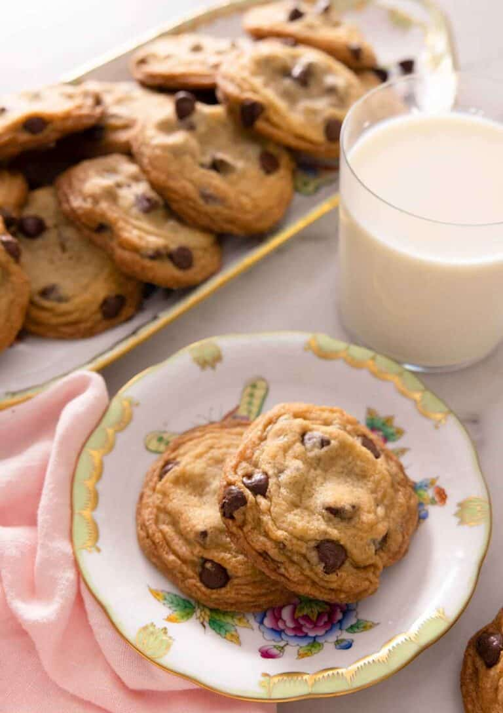

Chocolate Chip Cookies

These Chocolate Chip Cookies will be the most delicious cookies you've ever made. You'll be wishing you'd done them sooner! This chocolate chip cookie recipe is a tried-and-true dessert that always turns out perfectly. This simple cookie recipe has a soft and chewy centre with golden brown edges and is loaded with chocolate chips.
Ingredients
- 2 ¼ cups all-purpose flour (270g)
- ¾ teaspoon baking soda
- ¾ teaspoon salt
- 1 cup unsalted butter softened (227g)
- ¾ cup light brown sugar (165g)
- ¾ cup granulated sugar (150g)
- 1 large egg
- 1 tablespoon vanilla extract
- 1½ cups chocolate chips or chunks or chopped bars (270g)
- flaked salt optional
Steps
- In a medium bowl, whisk together flour, baking soda, and salt.
- In the bowl of a stand mixer with the paddle attachment or a large mixing bowl, combine butter and sugars. Beat on medium-low speed until very light and fluffy, about 5 minutes.
- Add egg and vanilla. Beat until well combined, scraping down the sides of the bowl.
- With the mixer on low, gradually add the flour mixture. Beat just until combined. Stir in the chocolate chips.
- Using a 1½ tablespoon scoop, scoop the dough into balls (35g-40g) and place on a small sheet pan or tray lined with wax or parchment paper. Freeze dough balls for 30 minutes, or cover and refrigerate for 12 to 36 hours. (The longer chill will result in a deeper flavored, chewier cookie, but both are delicious!)
- When ready to bake, preheat the oven to 375F. Line two baking sheets with parchment paper or a silicone mat.
- Press on any extra chocolate chips and then bake for 10 to 12 minutes or until the edges are golden brown. (For best results, bake one sheet at a time.) Immediately sprinkle cookies with flaked salt, if desired. Let cookies cool on the pan for 5 to 10 minutes. Finish cooling on a wire rack. Store any leftovers in an airtight container for up to 5 days.